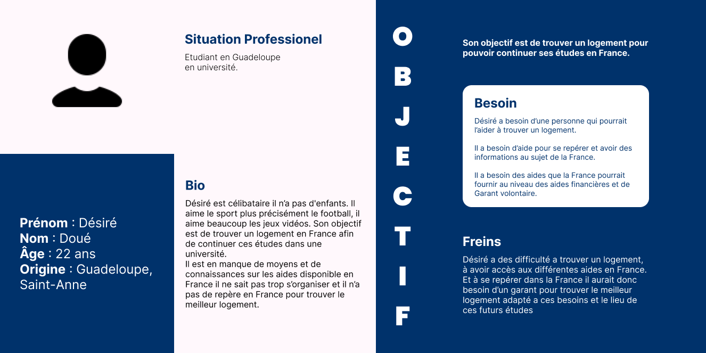
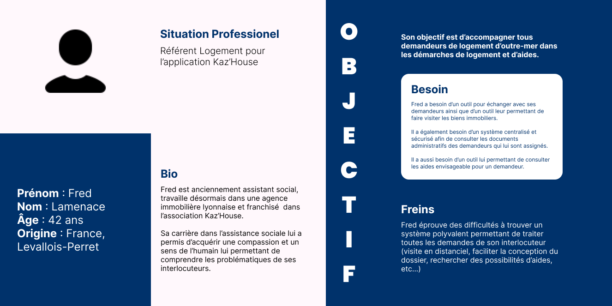
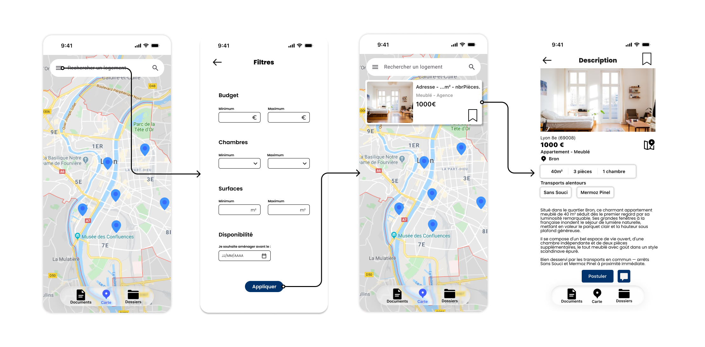
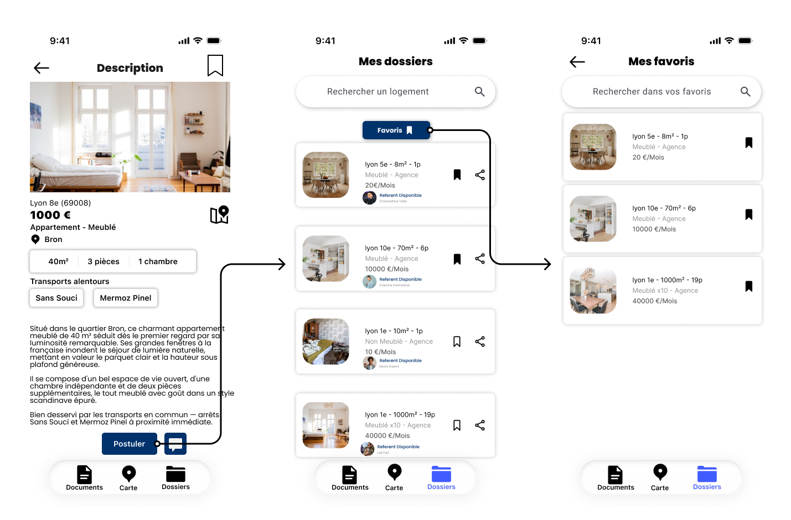
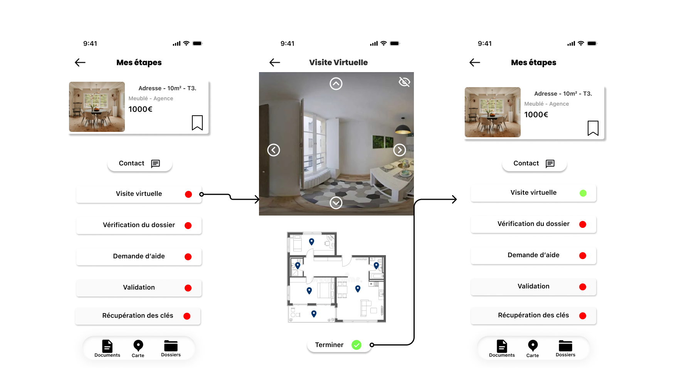
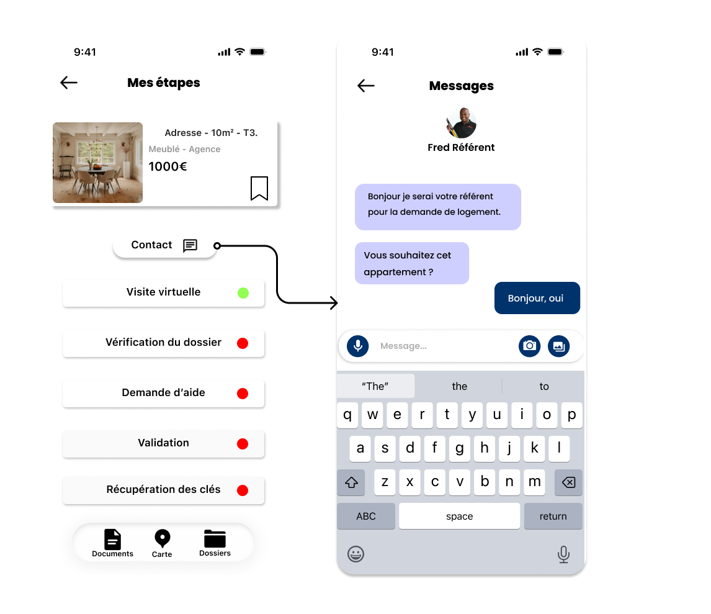
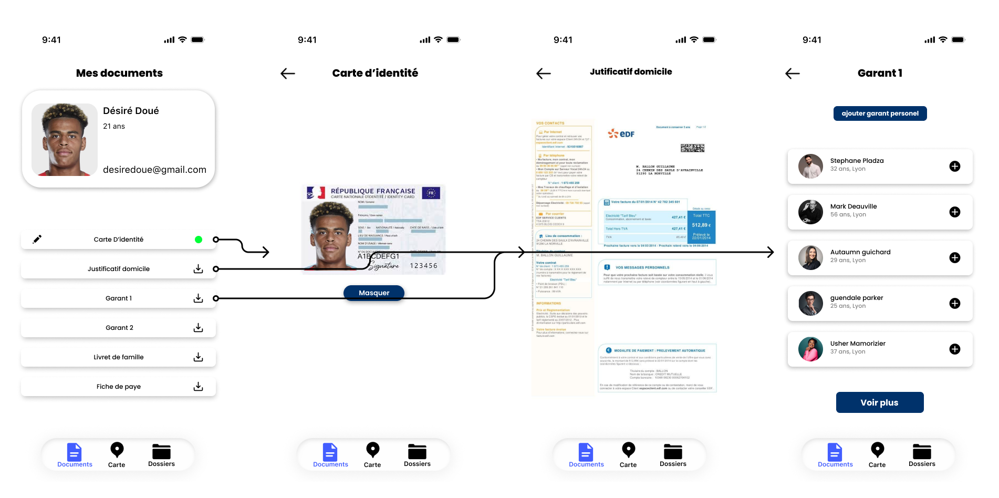
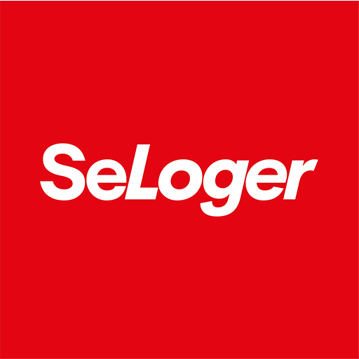

Bonjour et bienvenue sur la documentation du projet Kaz'House. Nous avons été missionnés de développer une application mobile permettant aux personnes vivant en Outre-mer de faciliter l'accès au logement en France métropolitaine.


Chaque année 30 000 habitant d’outres mer partent vivre en France métropolitaine. La majorité d’entre eux rencontre des difficultés avant ou à leurs arrivé (la distance géographique, la méconnaissance du marché immobilier et la complexité des démarches administratives). Il n’y a aucun autre service qui propose cette aide auprès des ultra marins. Mais il existe des applications comme SeLoger ou des agences immobilières. Notre application permet d’avoir une approche humaine et l’aide d’un référent ce qu’on ne peut pas retrouver ailleurs.







Inspiration pour la recherche de logements et l'organisation des annonces.

Études et articles concernant la mobilité des ultramarins vers la métropole.
Les échanges avec les futurs utilisateurs ont permis de mieux comprendre leurs besoins.